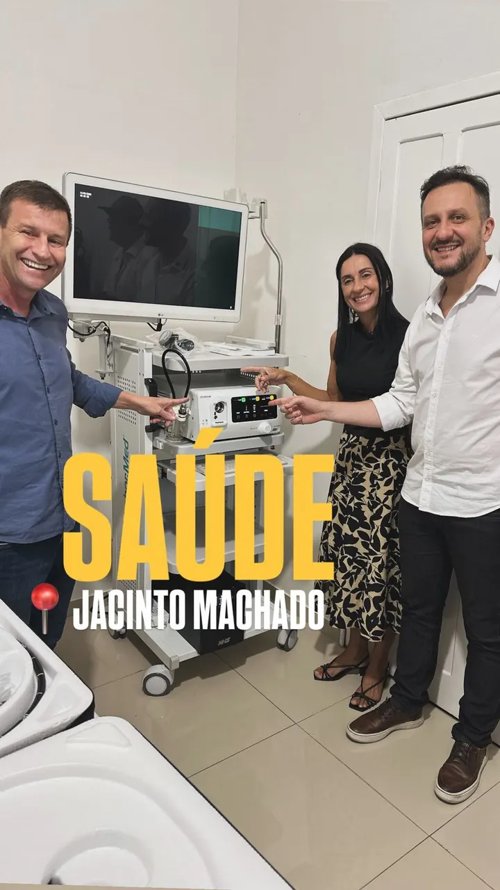
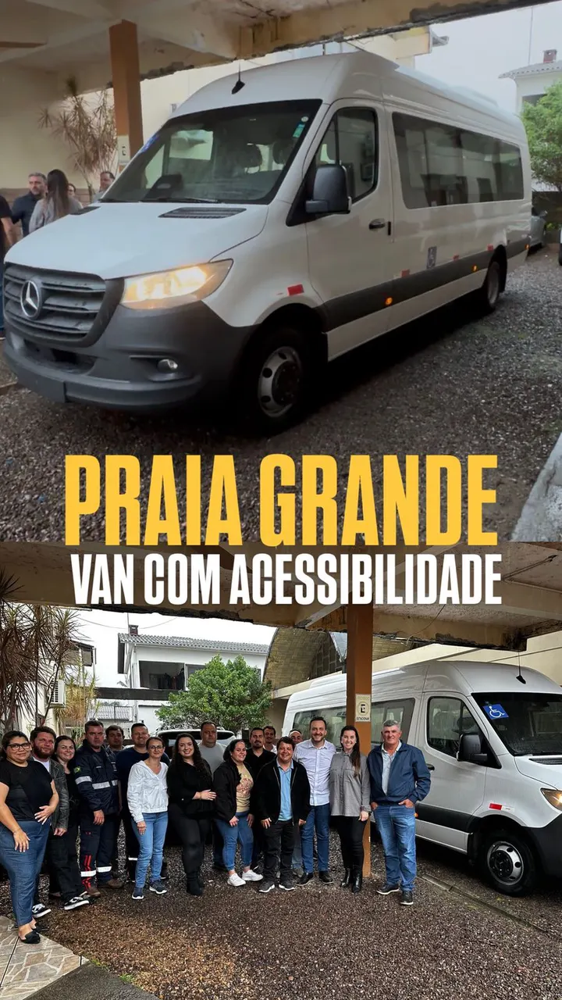
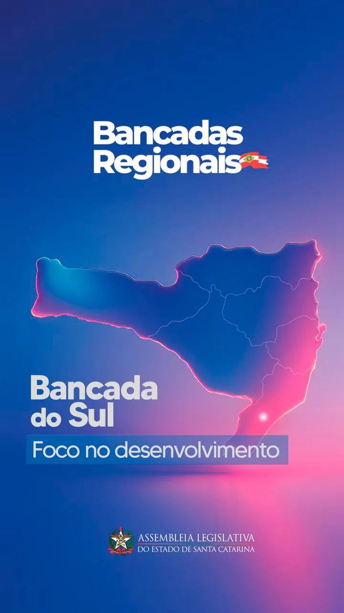
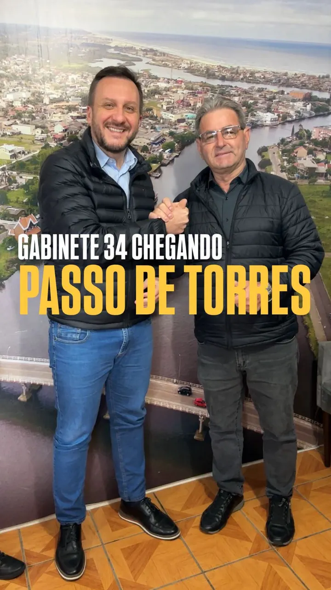

Rodovia TBS 255 · Timbé do Sul
Pavimentação asfáltica, com fornecimento de materiais, num trecho da TBS 255 em Figueira Alessio.
Emenda impositiva 2025, paga.
No extremo sul, cada quilômetro até o atendimento pesa. 11 cidades da AMESC receberam emenda deste mandato: estrada, saúde, van para paciente e terapia para pessoas com autismo.

Faz. A estrada que liga Passo de Torres a Laguna, a BR-101 no Morro dos Cavalos, a saúde que precisa chegar perto de quem mora longe: são pautas que só avançam quando alguém do Sul leva o pedido até onde o orçamento é decidido, e volta para cobrar. A conta abaixo é a resposta prática: 34 emendas em 11 cidades.
Estrada, saúde e mobilidade para quem mora longe do atendimento. Estas são as maiores destinações do mandato no extremo sul, uma por cidade.
Pavimentação asfáltica, com fornecimento de materiais, num trecho da TBS 255 em Figueira Alessio.
Emenda impositiva 2025, paga.
Equipamentos de endoscopia para a Secretaria de Saúde. A máquina chegou em março de 2026, e o deputado foi conferir de perto antes de começar a atender.
Transferência especial 2025, publicada.
Van para o transporte de pacientes. Mais do que um veículo: mobilidade para quem precisa ir atrás de tratamento.
Transferência especial 2025, paga.
Investimento em infraestrutura no município, com recurso já pago.
Transferência especial 2025, paga.
Pavimentação da rodovia municipal na comunidade de Sanga do Marco.
Emenda impositiva 2025, paga.
Insumos para recuperar as vias do município.
Emenda impositiva 2025, paga.
Custeio do hospital da comunidade.
Sobra de saúde 2024, pronta para pagamento.
Pavimentação asfáltica da rua.
Emenda impositiva 2025, paga.
Terapia, APAE e espaço público pensado para todo mundo. A pauta do autismo também chegou à AMESC.
Reabilitação de pessoas com TEA por meio de equoterapia e terapia ocupacional, com emenda já paga. O projeto apareceu em reportagens sobre equoterapia no Sul catarinense.
Apoio financeiro à saúde do município para o atendimento de pessoas com autismo, já pago.
Veículo novo para a APAE, com emenda paga em 2024.
Reforma da Praça Frei Euzébio, criando um espaço inclusivo, com emenda já paga.
Onze cidades do extremo sul receberam emenda deste mandato, de Araranguá a Passo de Torres e Praia Grande.
Emendas destinadas entre 2023 e 2026, conforme o controle de emendas do gabinete.
Emenda leva recurso a uma cidade. Lei muda a regra para as 295 cidades do Estado, e continua valendo depois que o mandato acaba.
Institui a rota estadual das águas termais, que reúne num mesmo circuito cidades como Gravatal, Santo Amaro da Imperatriz, Piratuba, Águas Mornas e São João do Sul.
AprovadoLei nº 18.673/2023 Entender a lei PL 0265/2022 no e-LegisPara todo o Estado
Autoriza farmácias e drogarias a realizar exames clínicos e testes rápidos, ampliando o acesso à saúde básica em cidade pequena, onde o laboratório é longe e a fila é grande.
AprovadoLei nº 19.011/2024 Entender a lei PL 0281/2023 no e-LegisPermite destinar recursos do Fundo Social a sistemas fotovoltaicos em hospitais filantrópicos. Menos conta de luz é mais dinheiro no atendimento.
AprovadoLei nº 19.785/2026 Entender a lei PL 0257/2025 no e-LegisIncentiva sessões de cinema adaptadas a crianças e adolescentes com autismo e suas famílias: som mais baixo, luz acesa e liberdade para se mover.
AprovadoLei nº 19.160/2025 Entender a lei PL 0266/2022 no e-LegisTem problema que nenhuma prefeitura resolve sozinha, porque atravessa municípios. É aí que ter deputado do Sul deixa de ser detalhe.
O asfaltamento da estrada que liga Passo de Torres a Laguna é prioridade da Bancada do Sul na Alesc.
O túnel, as rotas alternativas e as melhorias na rodovia. Enquanto existir um caminho só, uma interdição para o Sul inteiro: o trabalhador, o caminhão da safra e a ambulância junto.
Reportagens de veículos independentes. Cada card abre a matéria original, para quem quiser conferir na fonte.
Reportagem sobre a equoterapia para pessoas com TEA no Sul catarinense, com projetos em Jacinto Machado e outras cidades custeados por emendas do deputado.
Ler matéria →Reportagem de TV sobre o desenvolvimento emocional e social de pessoas com TEA na equoterapia, na região sul.
Ler matéria →As prioridades de infraestrutura e saúde do Sul para 2024, definidas pelos deputados da região, com o deputado como coordenador da Bancada do Sul.
Ler matéria →O que o deputado publicou sobre as cidades do extremo sul. Toque para abrir no Instagram.

Reel 19mar2026 @pepecollaco19/03/2026 MENOS DISCURSO, MAIS RESULTADO 836
Reel 04out2025 @pepecollaco04/10/2025 MAIS CUIDADO COM A NOSSA GENTE 1587
Reel 01jul2025 @pepecollaco01/07/2025 CAMINHOS DO MAR! 972
Reel 01ago2025 @pepecollaco01/08/2025 PASSO DE TORRES 585
O extremo sul também é Sul
11 cidades, 34 emendas. Dia 4 de outubro, vote em quem trabalha pela região.